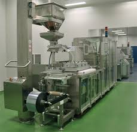

PAT-Pfizer Summer Internship
SIDDHARTH KANUNGO
Chemical Engineering
Process Analytical Technology
It is a mechanism to design, analyze, and control pharmaceutical manufacturing processes through the measurement of Critical Process Parameters (CPP) which affect Critical Quality Attributes (CQA)
Why we need it
Because patent-ocalypse is coming…
Motivation
- Long development time for a new drug, the production technology is frozen
- Reduce production cycling time
- Prevent rejection of batches
- Enable real time release
- Increase automation
- Improve enery and material use
- Facilitate continuous processing
PAT Tools
- Multivariate data acquisition and data analysis tools
- Design of Experiments to determine CPP
- Process analytical Chemistry (PAC) tools
- In-line and on-line analytical instruments to measure CPP
- NIRS, biosensors, Raman Spectroscopy, fibre optics
- Continuous Improvement
Overall Aim
To make better production technology in Pharmaceutical and Food Industries.
Manufacturing of Tablets
Figure 1: Manufacturing of Tablets
- API and Excipients
- Mixing and Granulation
- Drying
- Compression
- Coating
- Packaging
Pfizer and PAT Research
Pfizer Global Supply, Montreal
- Produces over 30 Over the Counter Medicines
- Medium scale factory
- Runs for almost a year
PAT-Pfizer at UdeS
- Currently the only research group in the world specializing in PAT
- Has strong collaboration with Pfizer
- Has strong collaboration with other departments in
- Ecole Polytechnique
- University of Laval
- Universite de Montreal
- Many more
Four Problems
Segregation in a FeedFrame
Is there any segregation in the feedframe ?
Figure 2: FeedFrame
Why it matters?
Unaccounted segregation could mess up composition
DEM
- Took one paddle
- Filled up beads
To verfiy experimental results
Results
- The DEM is not as accurate, but there are some similarities that could be found.
Residence Time Distribution in a Hopper
Setup

Figure 4: Hopper
DEM
Needed to confirm previously established results
Spray Bed Fluidised Dryer
Figure 5: Dryer
Why we need it?
- Optimum Coating
- Optimum time for running the machine
CFD-DEM
- As air flow is also considered, DEM is needed to be coupled with CFD to create the simulation
Inspection Device for Operator
Object Recognition
- In the belt, the pills are small enough to be left out
- For a single pill, the entire batch has to reseted.
- Huge time loss
An Inspection Device
- To detect the pills on the belt
- Programming using tablet pc and and UEye Camera
Thanks to
Dr. Srimanta Ray
Figure 6: Dr. Srimanta Ray
Dr. Soma Nag
Figure 7: Prof. Soma Nag
University of Sherbrooke
National Institute of Techonology, Agartala
PAT Pfizer Research Group in Montreal
- Lab mates at Research Group
- PAT Scientists at Pfizer Montreal
- Technicians
Advisors
Ryan Gosselin
Figure 11: Dr. Ryan Gosselin
Nicolas Abatzoglou
Figure 12: Prof. Nicolas Abatzoglou
MITACS

Thank you
And cheers for making it to the end.